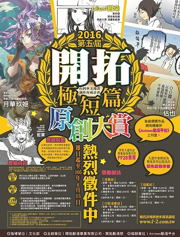
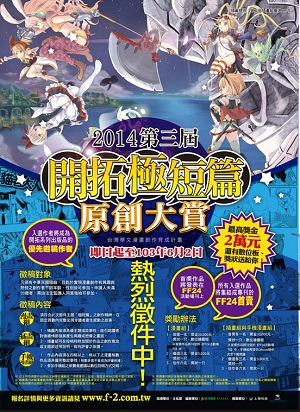
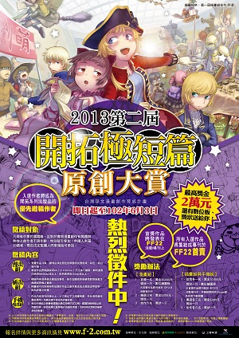
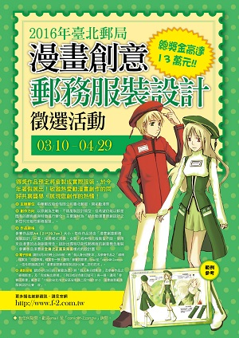

開拓極短篇原創大賞 2016
- 2016.06.15
第五屆的「開拓極短篇原創大賞」今年在漫畫組規則上有了重大變更, 更加入了新的合作夥伴! 將仍秉持推廣優秀原創人才、協助同人場內作者們開創未來的願景, 希望能發掘更多優秀作者。強者們, 歡迎前來參加!
本屆比賽共分「漫畫」、「插畫」與「行動漫畫」三組, 入選者除可獲得獎金、獎品外, 作品還將發表在有數萬人次閱覽的「開拓動漫祭活動場刊」, 與「Animen動漫平台」、「布卡漫畫」的《日更COMICS》專區上, 所有的入選作品並將集結成推廣專刊, 於2016暑假場的FF28首賣, 得獎作者也將成為開拓系列場刊、開拓動漫畫情報誌的優先邀稿作者喔! 此外, 漫畫組首獎者將可以在《日更COMICS》上提案並刊載一部42～50頁的短篇作品, 並會有編輯協助, 視日後讀者反應, 將可獲得正式連載的提案與簽約機會!- 指導單位文化部
- 主辦單位開拓動漫事業有限公司．開拓動漫祭
- 協辦單位
- 聯成電腦、Animen動漫平台
- 布卡漫畫、日更COMICS
- 收件截止日期105年6月15日23:59前
開拓極短篇原創大賞 2015
- 2015.06.01
開拓極短篇原創大賞今年堂堂邁入第四年! 第四屆的「開拓極短篇原創大賞」除將秉持推廣優秀原創人才、協助同人場內作者們開創未來的願景, 更大幅提高各組獎金, 希望能發掘更多優秀作者。強者們, 歡迎前來掄元!
本屆比賽共分「漫畫」、「插畫」與「手機漫畫」三組, 入選者除可獲得獎金、獎品外, 作品還將發表在有數萬人次閱覽的「開拓動漫祭活動場刊」上, 所有的入選作品並將集結成推廣專刊, 於2015暑假場的FF26首賣, 得獎作者也將成為開拓系列場刊、開拓動漫畫情報誌的優先邀稿作者喔!
想一舉擄獲數萬名動漫迷的眼光嗎? 想優先獲得被推薦到國內外各出版單位的機會嗎? 請務必參加本次極短篇大賞, 讓作品帶你進入更廣大的世界!- 指導單位文化部
- 主辦單位開拓動漫事業有限公司．開拓動漫祭
- 協辦單位聯成電腦
- 贊助單位上奇科技
- 收件截止日期104年6月1日前
開拓極短篇原創大賞 2014
- 2014.06.02
開拓動漫系列活動長年推動台灣原創漫畫, 集合專業的編輯、企劃與行銷人才, 輔導台灣有潛力的同人誌創作者進行轉型。透過選秀比賽、作品修改、全方位的宣傳與推廣、實體書籍的出版與市場行銷等計畫, 完整涵蓋出版產業鏈上下游。不但協助資源較微匱乏的獨立漫畫出版者發表作品, 同時也協助創作者行銷自己, 讓創作者除了加入傳統出版系統的選擇之外, 也有機會成為優秀的獨立出版者, 進而提升台灣整體的漫畫創作能量。
今年, 開拓動漫系列活動推出「第三屆開拓極短篇原創大賞」!! 希望推廣優秀原創人才、協助同人場內作者們開創未來的願景能持久延續下去!
本屆比賽共分「漫畫」、「插畫」與「手機漫畫」三組, 入選者可獲得獎金、獎品外, 並提供免費參與24小時聯成電腦精英培訓班等機會! 除此之外, 作品將發表在有數萬人次閱覽的「開拓動漫祭活動場刊」上, 所有的入選作品並將集結成推廣專刊於2014暑假場FF24首賣, 得獎作者也將成為開拓系列場刊的優先邀稿作者喔!
想一舉擄獲數萬名動漫迷的眼光嗎? 想優先獲得被推薦到國內外各出版單位的機會嗎? 請務必參加本次極短篇大賞, 讓作品帶你進入更廣大的世界!- 指導單位文化部
- 主辦單位開拓動漫事業有限公司．開拓動漫祭
- 協辦單位聯成電腦
- 贊助單位上奇科技
- 收件截止日期103年6月2日前
開拓極短篇原創大賞 2013
- 2013.06.03
原創漫畫在2012年可說是豐收的一年, 長年推動台灣原創漫畫的FF活動在2012年舉辦了以宣傳優秀創作者為目標的「第一屆開拓極短篇原創大賞」! 透過簡短有力的劇情去感動讀者與傳遞自己的創作意念, 除了獎金與作品出版機會外, FF籌備委員會亦有系統地規劃一連串推廣活動, 至今成果斐然並獲得大量迴響。
今年, 開拓動漫祭繼續推出「第二屆開拓極短篇原創大賞」!! 希望推廣優秀原創人才、協助同人場內作者們開創未來的願景能持久延續下去!
除了延續第一屆的「漫畫」與「插畫」兩組之外, 為因應漫畫未來的趨勢, 第二屆在獎項方面新增「手機漫畫」組, 入選者可獲得獎金、獎品外, 並提供免費參與24小時聯成電腦精英培訓班等機會!除此之外, 作品將發表在有數萬人次閱覽的「FF22活動場刊」上, 所有的入選作品並將集結成推廣專刊於FF22首賣, 入選作者也將成為開拓系列場刊的優先邀稿作者喔!
想一舉擄獲數萬名動漫迷的眼光嗎? 想優先獲得被推薦到國內外各出版單位的機會嗎? 請務必參加本次的極短篇大賞, 讓作品帶你進入更廣大的世界!- 指導單位文化部
- 主辦單位開拓動漫事業有限公司．開拓動漫祭
- 協辦單位聯成電腦
- 贊助單位上奇科技•WACOM
- 收件截止日期102年6月3日前
開拓極短篇原創大賞 2012
 2012.06.08
2012.06.08原創漫畫要如何獲得重視呢? 長年推動台灣原創漫畫的FF活動, 在邁入十週年的此時有了新的願景, 決定自今年開始集結活動之充沛能量, 舉辦以宣傳優秀創作者為目標的「開拓極短篇原創大賞」!
開拓動漫祭活動每次都能吸引各界的目光, 籌備委員會願將此一能量分享給所有的同人作者, 除了提供一個眾所矚目的舞台之外, 並有系統地規劃後續ㄧ連串推廣活動, 目的在協助同人會場內的優秀作者們能夠開創更燦爛的可能性!
比賽共分「漫畫」與「插畫」兩組, 入選者除了可贏得獎金、獎品之外, 首獎作品還能發表在有數萬人次閱覽的《FF20活動場刊》上, 所有的入選作品並將集結成推廣專刊於FF20首賣, 入選作者也將成為開拓系列場刊的優先邀稿作者喔!
想一舉擄獲數萬名動漫迷的眼光嗎? 想優先獲得被推薦到國內外各出版單位的機會嗎? 請務必參加本次的極短篇大賞, 讓作品帶你進入更廣大的世界!- 指導單位行政院新聞局
- 主辦單位開拓動漫事業有限公司．開拓動漫祭
- 收件截止日期101年6月8日前
郵局漫畫創意郵務服裝設計
- 2016.03.10~2016.04.29
公開徵求國內動漫畫創作人才, 以不受拘束的新一代動漫概念, 設計「功能性郵務服裝」, 展現造型創意, 參賽作品預定於「亞洲動漫創作展PF24」(2016年5月7、8日舉辦) 現場展示, 並配合2016年度郵政活動之宣傳及展出。得獎作品預定將會製成實際服裝, 於今年暑假展出！
- 比賽主題
- 結合動漫畫空想風格,
- 原創設計之新世代郵務服裝
- 主辦單位中華郵政股份有限公司臺北郵局、開拓動漫
- 徵稿時間2016年3月10日起，至2016年4月29日止
- 比賽主題
台灣啤酒漫畫服裝設計 (incomplete)
- 2012.07.13~2012.8.19
待補
- 地點桃園縣展演中心
- 活動內容
- 同人誌即售
- 角色扮演活動
- 動漫相關商品展售
- 動漫相關日本嘉賓來訪
- 特別來賓速水獎